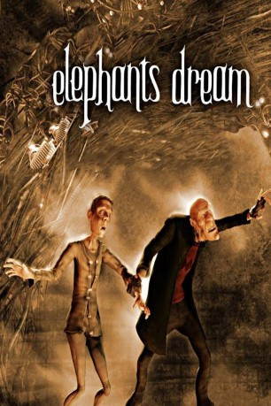

#4747 Elephants Dream
 
 IMDB-Wertung: 5.8 / 10
IMDB-Wertung: 5.8 / 10  Metascore: 0
Metascore: 0 
Emo und Proog befinden sich in einer riesigen surrealen Maschine. Der junge Emo ist verschüchtert und ruhig. Zudem scheint er Angst zu haben.Der alte Proog hingegen scheint die Maschine zu verstehen. Er deutet die merkwürdigen Dinge die geschehen und findet die scheinbar sicheren Wege.Je länger die beiden aber durch die Maschine irren, desto größer wird Emos Zweifel an Proog und der Maschine...
Jahr: 2006
Dauer: 11 Minuten
FSK:
Land: Niederlande Studio: Blender FoundationTonspuren:
Untertitel:
Auflösung: 1080p (1920x1080) Größe: 814 MB
Genre: Animation/Trick, Kurzfilm, Sci-Fi
Regisseur: Bassam Kurdali
Drehbuch: Jeremy Sheldon
Soundtrack:
Darsteller:
Datei: X:\Kinder Collections\Blender Open Source\Elephants Dream (2006, FSK, 1920x1080).avi seit 11.11.2016
Festplatte: Kinder-Filme+Trick
 Es gibt insgesamt 9 Filme in der Gruppe 'Kinder Collections\Blender Open Source'
Es gibt insgesamt 9 Filme in der Gruppe 'Kinder Collections\Blender Open Source'